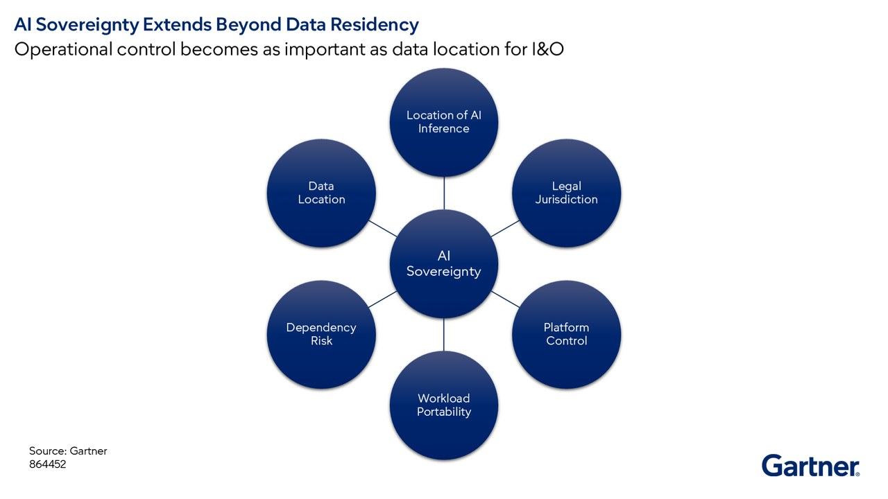

유럽의 주권형 AI 추진은 새 플랫폼 하나가 더 생기는 문제가 아니다. AI를 어디서 돌릴지, 누가 운영을 통제할지, 기존 핵심 시스템과 얼마나 가까이 둘지를 다시 따지는 문제다.
핵심 요약
유럽의 IPCEI-AI유럽이 공동 이익 프로젝트 형태로 추진하는 AI 생태계 구축 이니셔티브. 추진은 주권형 AIsovereign AI — 데이터, 운영, 기술 통제를 특정 관할과 정책 요구에 맞춰 설계한 AI 환경.를 논의 단계에서 구축 단계로 옮겼다. 그렇다고 기업이 지금 즉시 AI 워크로드를 주권형 환경으로 이전해야 하는 것은 아니다. 다만 EU의 I&O 책임자는 앞으로 배치 기준, 운영 통제, 플랫폼 평가, AI 거버넌스를 새로 정해야 할 가능성이 크다. 특히 금융, 공공, 헬스케어, 핵심 인프라처럼 규제가 강한 업종에서 변화가 먼저 나타날 수 있다.

크게 보기AI sovereignty extends beyond data location to include AI inference location, legal jurisdiction, platform control, workload portability and dependency risk. The broader view emphasizes that operational control is as important as where data resides.
AI sovereignty extends beyond data location to include AI inference location, legal jurisdiction, platform control, workload portability and dependency risk. The broader view emphasizes that operational control is as important as where data resides.
닫기문제 맥락
EU의 I&O 책임자에게 중요한 점은 새 주권형 AI 플랫폼 몇 개가 등장하는 일이 아니다. 더 큰 변화는 AI 조달과 배치 선택을 바꿀 수 있는 유럽형 AI 생태계가 형성될 가능성이다. 유럽은 아직 미국과 중국처럼 지배적인 최전선 모델 공급자를 갖지 못했다. 그래서 조직은 최첨단 모델 성능과 주권 목표 사이의 상충을 별도로 평가해야 한다.
영향
원문 그대로
주권형 AI의 핵심 과제는 그것을 채택하는 일이 아니라, 어떤 AI 워크로드를 어디에서 실행할지 정할 거버넌스와 배치, 통제 메커니즘을 세우는 일이다.
IPCEI-AI는 주권형 AI가 미래 정책 논의가 아니라 전략적 차별화의 인프라와 운영 모델이 되고 있음을 보여 준다. I&O 책임자의 핵심 과제는 주권형 AI 자체를 채택하는 일이 아니라, 어떤 AI 워크로드를 어디에 둘지 정할 거버넌스와 통제 메커니즘을 세우는 일이다. 특히 정부, 금융서비스, 헬스케어, 핵심 인프라에서는 데이터 거버넌스, 운영 복원력, 관할 통제, 제3자 위험 때문에 이 판단이 더 빨라질 수 있다.
AI 워크로드는 따로 떼어 평가할 수 없다. ERP, 코어 뱅킹, 세무, 보험 같은 핵심 애플리케이션과 가까이 있어야 사업 가치가 난다. 에이전트형 AI가 기계 속도로 움직일수록 이런 요구는 더 강해진다.
이 대목 전문 펼치기
IPCEI-AI의 결정은 주권형 AI가 미래 정책 논의가 아니라 전략적 차별화의 인프라와 운영 모델이 되고 있음을 강조한다. 이 이니셔티브가 현실화되면 I&O 책임자의 주된 과제는 주권형 AI를 채택하는 일이 아니다. 어떤 AI 워크로드를 어디에서 실행할지 정할 거버넌스, 배치, 통제 메커니즘을 세우는 일이 핵심이다.
IPCEI-AI의 영향은 정부, 금융서비스, 헬스케어, 핵심 인프라처럼 규제가 강한 분야에서 먼저 나타날 가능성이 크다. 이런 업종은 데이터 거버넌스, 운영 복원력, 관할 통제, 제3자 위험과 관련한 요구가 이미 워크로드 배치의 중요한 판단 기준이기 때문이다. 주권형 AI 환경이 반드시 의무인 것은 아니지만, 이들 조직은 주권형 AI 역량이 규제와 위험관리 목표에 더 잘 맞는지 가장 먼저 검토하는 쪽에 속할 수 있다.
주권이 중요한 고려사항이 되고 있지만, AI 워크로드를 고립된 대상으로 평가할 수는 없다. 엔터프라이즈 AI는 ERP 시스템, 코어 뱅킹 플랫폼, 세무, 보험, 그 밖의 핵심 애플리케이션과 긴밀히 연결될수록 가치가 커진다. 그래서 데이터와 애플리케이션의 근접성은 워크로드 배치의 핵심 요인이다. 에이전트형 AI 시스템이 기계 속도로 작동할수록 이런 요구는 더 강해질 가능성이 높다. EU의 I&O 책임자는 주권형 AI 환경이 AI 워크로드뿐 아니라, 사업 가치를 내는 데 필요한 주변 애플리케이션 생태계까지 뒷받침할 수 있는지 평가해야 한다.
시사점
원문 그대로
주권형 플랫폼이라는 위치 설정이 곧 운영 독립성이나 의존 위험 감소를 뜻한다고 가정해서는 안 된다.
가트너는 워크로드 배치가 인프라 선택이 아니라 거버넌스 프로세스가 된다고 봤다. 조직은 현재와 3년 뒤의 AI 워크로드 목록을 만들고, 사업 중요도·데이터 민감도·규제 노출로 분류해야 한다. 주권 요구는 데이터 저장 위치와 따로 정의해야 하며, 플랫폼 운영 주체와 이식성, 종료 옵션, 계약상의 운영 통제 요건도 점검해야 한다.
유럽형 AI 생태계가 커져도 주권 표방이 곧 운영 독립을 뜻하지는 않는다. Mistral AI 같은 유럽 공급자는 대안이 될 수 있지만, 하드웨어와 하이퍼스케일러, 공급망 의존은 여전히 남아 있다. I&O 책임자는 주권 표지보다 운영 독립성, 생태계 성숙도, 복원력, 이식성, 장기 지속성을 같이 평가해야 한다.
이 대목 전문 펼치기
AI 워크로드 배치는 거버넌스 결정이 된다. 과거 AI 워크로드 배치는 주로 데이터 중력data gravity — 데이터가 있는 곳 가까이 애플리케이션과 처리 수요가 모이는 현상., 모델 가용성, 성능, 비용, 규제 요구, 기존 클라우드 관계의 영향을 받았다. IPCEI-AI가 시행되면 주권형 AI 배치 선택지의 가용성과 가시성이 커질 수 있다. 그러면 비용, 성능, 모델 역량, 생태계 성숙도, 애플리케이션 근접성과 함께 주권 요구를 평가하는 중요성도 커질 수 있다.
주권형 AI 선택지가 성숙해질수록 EU의 조직에는 반복 가능한 판단 틀이 필요하다. 어떤 워크로드는 글로벌 AI 생태계에 두고, 어떤 워크로드는 주권형 배치 모델이 필요한지 가려야 한다. 워크로드 배치는 단순한 인프라 선택이 아니라 거버넌스 프로세스가 된다.
I&O 책임자와 팀의 실행 과제는 다음과 같다. 현재의 AI 워크로드와 향후 3년의 AI 워크로드 목록을 만들어야 한다. 워크로드를 사업 중요도, 데이터 민감도, 규제 노출로 분류해야 한다. 주권형 AI 선택지가 널리 제공되고 실용화되기 전에, 관련 사업 부문과 함께 워크로드 배치 기준을 개발해야 한다. AI 배치 결정을 위한 거버넌스 위원회나 최소한의 검토 절차를 세워야 한다. 이는 기존 클라우드 센터 오브 엑설런스를 확장한 형태일 수 있다.
주권은 데이터 레지던시에서 운영 통제로 확장된다. 많은 조직은 여전히 주권을 데이터가 어디에 저장되는지의 문제로 해석한다. 그러나 IPCEI-AI와 가트너의 더 넓은 주권 연구는 주권이 점점 더 누가 시스템을 통제하는지, 처리 위치가 어디인지, 누가 인프라를 운영하는지, 의존성을 어떻게 관리하는지에 달려 있다고 본다.
AI가 운영과 사업 프로세스에 스며들수록 I&O 책임자는 데이터 주권 말고도 다른 요소를 더 봐야 한다.
I&O 책임자와 팀의 실행 과제는 다음과 같다. 누가 AI 플랫폼과 지원 서비스를 관리하는지 식별해야 한다. 워크로드의 이식성과 종료 옵션을 평가해야 한다. 운영 통제 요건을 두고 법무와 소싱 팀과 함께 AI 공급업체 계약을 검토해야 한다. 주권 요구를 데이터 레지던시 요구와 분리해 정의해야 한다.
유럽 AI 생태계는 새 평가 범주의 AI 플랫폼을 만든다. 지금까지 대부분의 AI 플랫폼 평가는 하이퍼스케일러와 최전선 모델 공급자에 집중됐다. 유럽의 주권형 AI 생태계가 나타나기 시작하면, EU의 I&O 책임자는 이 플랫폼들이 엔터프라이즈 워크로드에 필요한 혁신, 규모, 복원력, 거버넌스, 운영 성숙도를 제공하는지 판단해야 한다.
과제는 좋은 공급자와 나쁜 공급자 중 하나를 고르는 일이 아니다. 상충관계를 평가하는 일이다. 주권형 AI 플랫폼은 유럽의 거버넌스와 통제 목표에 더 잘 맞을 수 있다. 반면 하이퍼스케일러 생태계는 혁신, 생태계, 모델 역량의 일부 영역에서 계속 앞설 수 있다.
Mistral AI의 전개는 새 유럽 AI 생태계의 잠재력과 불확실성을 함께 보여 준다. Mistral AI는 유럽의 주권 목표에 맞는 대안을 제공할 수 있는 대표적 유럽 AI 공급자로 떠올랐다. 그러나 Mistral AI나 유사한 유럽 공급자가 확고한 글로벌 AI 플랫폼의 대안으로 널리 채택될 만큼 규모, 생태계 성숙도, 시장 채택을 확보할지는 아직 이르다.
주권은 절대적인 개념도 아니다. Mistral AI는 모델과 애플리케이션 계층의 의존을 줄이더라도, 여전히 글로벌 하드웨어 생태계와 하이퍼스케일러, 더 넓은 기술 공급망에 의존한다. I&O 책임자는 주권형 AI 플랫폼을 평가할 때 주권 포지셔닝만 볼 것이 아니라, 운영 독립성, 생태계 성숙도, 복원력, 이식성, 장기 지속 가능성을 함께 봐야 한다.
I&O 책임자와 팀의 실행 과제는 다음과 같다. IPCEI-AI 생태계 참여자와 규정 준수형 AI 공급업체의 등장을 모니터링해야 한다. 표준화한 거버넌스, 복원력, 이식성 요구로 주권형 AI와 하이퍼스케일러 제안을 비교해야 한다. 주권형 포지셔닝이 곧 운영 독립성이나 의존 위험 감소를 뜻한다고 가정하지 말아야 한다.
주권형 AI 인프라는 주권형 AI 거버넌스의 압력을 키운다. 유럽이 주권형 AI 인프라를 만들겠다는 목표와, 기존 거버넌스 프레임워크가 점점 더 자율적인 AI 시스템을 다룰 수 있는 능력 사이에 긴장이 생길 수 있다.
현재 AI 거버넌스 프레임워크는 배포된 AI 시스템의 모니터링, 보안, 컴플라이언스 같은 운영 통제에 초점을 두는 경우가 많다. 그러나 주권형 AI는 거버넌스 책임을 없애지 않는다. 조직은 점점 더 자율적인 AI 환경 전반에서 책임성, 감독, 설명가능성, 위험관리를 입증할 메커니즘이 여전히 필요하다.
I&O 책임자에게 이는 인프라 관리를 넘어 AI 생태계 전반의 거버넌스, 관측성observability — 시스템 내부 상태를 로그, 지표, 추적으로 파악하는 능력., 정책 집행, 운영 감독을 가능하게 하는 역할까지 뜻한다.
I&O 책임자와 팀의 실행 과제는 다음과 같다. 기존 AI 거버넌스 역량을 새 에이전트형 AI 사용사례와 맞춰 검토해야 한다. AI 에이전트와 자율 워크플로를 위한 관측성과 모니터링 적용 범위를 평가해야 한다. 플랫폼 평가에서 주권 요구와 함께 거버넌스 요구도 포함해야 한다. AI 운영을 위한 감사와 보고 역량을 세워야 한다. 기반모델, 에이전트형 AI, 운영 책임성과 관련한 EU 요구의 변화를 계속 모니터링해야 한다. 특히 규제가 강한 EU 산업의 I&O 책임자에게 중요하다.